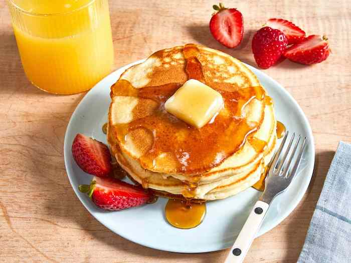

Pancakes

Check out this delicious American pancake recipe! One of the most common breakfast foods in the United States, it is very versatile and will provide you with a very special meal!
Ingredients
- 1 and 1/4 cup (tea) of wheat flour
- 3 teaspoons of baking powder
- 1 cup of milk (tea)
- pinch of salt
- 1 tablespoon of sugar
- 2 eggs lightly beaten
- 2 tablespoons melted butter
- oil
Steps to make it happen
- Mix in a container: flour, sugar, yeast and salt.
- In another container, mix the eggs, milk and butter.
- Add the liquids to the dry ones, without overmixing.
- The dough should not be too liquid, it should flow slowly.
- Heat and grease the frying pan with oil, place the batter in the center, about 1/4 cup per pancake.
- Turn the dough over to bake the other side and it's ready!
return to main page